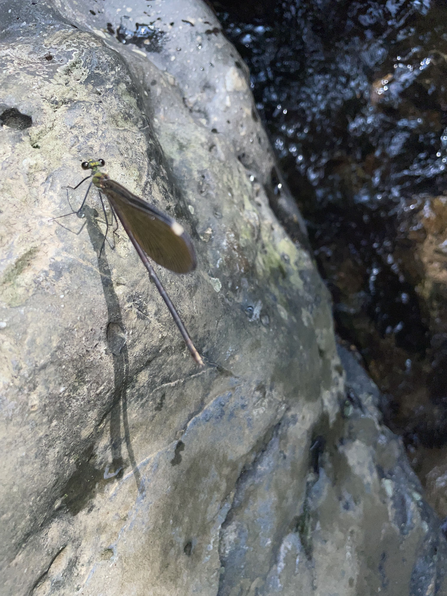
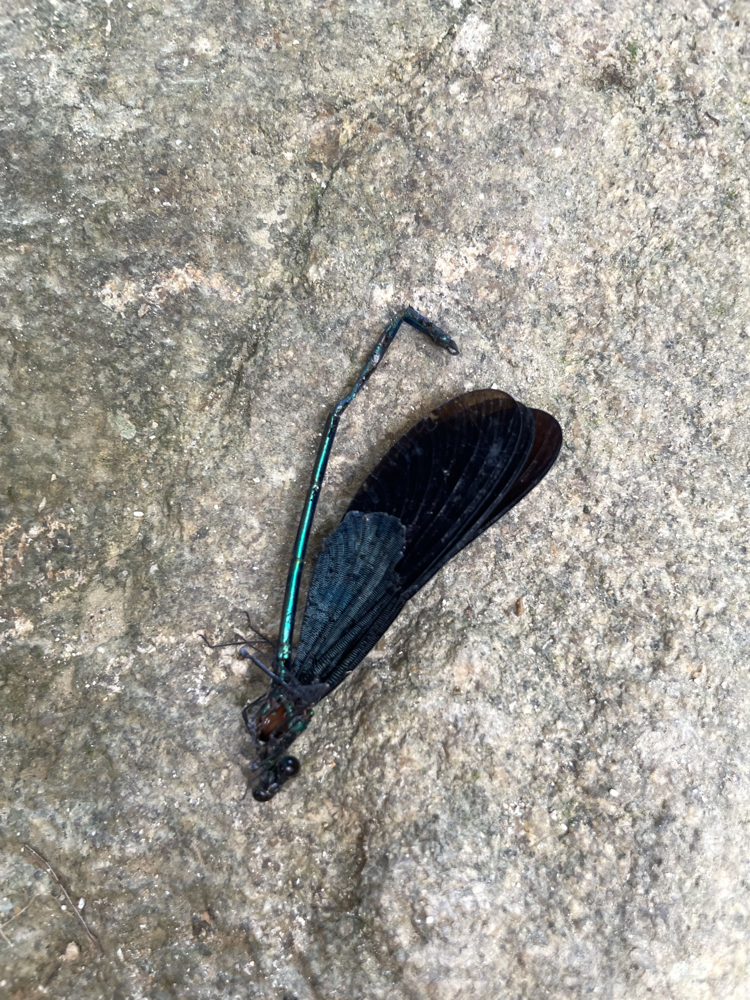
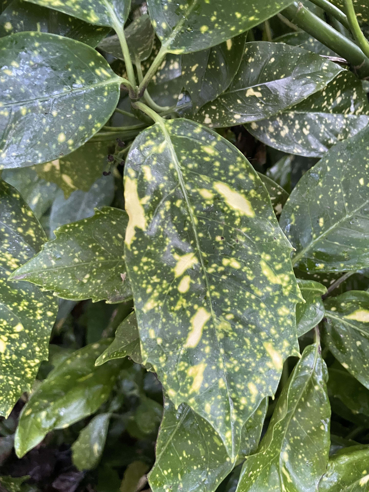

极限的干净
极限的干净
是什么样的
把所有不需要的东西剔除
留下一个容器的空
纯净如
水正要结冰之时
水与冰之间的东西
它形成在
无与有的中间
又如气息一样
捉摸不定
它弥散在宇宙的深部与边缘
真理与谬论
载具与囚地之中
拷问以太、风笛和
失语的人
它说出意义的阴阳
永久竞赛的结构
彷徨，并在彷徨中突飞猛进
睁眼，并始终闭眼
它从身体进入自身
吃下自我
从无意义里炼出黄金
把真理留给粪便
极限的干净
是你，也是我
每次我绕你走一圈
你便也绕我走了一圈
如何
如何让万事万物穿过你的身体
如何说出一个精确
如何成为风
如何像树一样仅仅
存在着
如何让你所有能说的成为一个闭环
跳过永恒的沉默
如何变成那对打情骂俏的情侣
其他人 所有人
脚下的石头
或者那震动的水面
在活着的时候
远
半根烟放在栏杆上
被风吹掉了
风好大
烟落得好远
我够不到
西湖
一根烟抽完
再点上一根
上一根的火星子还没灭完
天快黑了
西湖边灯亮了
第二根烟有点苦
吸口风
路过一个粉红色上衣的女人
她吸了我的烟
男人和小孩
吸了我的烟
我曾经把一根烟丢进西湖
在天黑的时候
诗人的问题是（二）
他回不去写下这句话的那刻
就这样
叶子
就这样
落了下来
诗人的问题是（一）
他依然不知道下一秒要发生什么
分行诗
分行
有
一种
神秘的
功能
走到了
一个亭子
在雨里
我也不知道
是哪
有些东西
有些东西是
不能被人知道的
它藏在物的间隙
却比物
更加重要
如果你足够静
不去想
不去说
你就能察觉到它的踪迹
你说了
它就远了
车上
有五个人
一个在睡觉
两个在看电视
一个在聊微信
还有一个我看不见
笔记9.29
我住在我之内
我会化成灰 变成石头 成为我脚下踩着的东西的一部分 我所住的东西的一部分
我们都是一 在永恒尽头
我变成你 你变成我 只要在永恒尽头
生前再怎么优雅美丽 死后也是一抔土 万物之一 美丑本是一 无差别


那种图案只有神造的出 人造不出 就像人无法制造真正的随机 一样
秘密
就好比
一片叶子
芋艿的
就那么
静静地
看着
雨
我在灵隐骑车
天下雨了
我淋湿了
雨想告诉我什么
什么
自行车上高铁
把自行车前轮拆掉
绑在后轮上
再套进麻袋
据说这样可以带上高铁
我乘公交车去高铁站
第一个司机连门都没开
他说自行车不让上 这是规定
我说已经包好了
他说不让不让 这是规定
我想也许是我不够轻松
第二辆车来时
我把车一拎
嗖的上去了
傻逼
我考过中考状元
我觉得这事我能吹很久
我上过牛津大学
我觉得这事我也能吹很久
倒不是跟别人吹
这种事放心里
能提醒自己
还不是个大傻逼
不过这样好像比跟别人吹
更傻逼些
非此即彼（给John T. Gast的信 2023.7）
Sorry I may have been a bit pushy, in this world of ambiguity and everyone being polite I wanted to be more direct… From your music and the way you act, I wonder if like ten years ago you were thinking about the same things I am now: Receiving guidance from something mysterious and immense, then whether to choose a path of reclusion and ascension, exploring what is unknowable in the living world, or to step out and create as an artist. Maybe it's too big to throw out this topic all at once, and you don't know me well enough to discuss it, in which case feel free not to answer, and be safe. I appreciate all sincere actions, and rejection is also one. Besides I can hear your answer from your work. If we talk again afterward, I will keep it completely between us. I don't want to tell people I know John t gast to get contemporary credit, and I want to help you just out of respect for you as well. Be safe, and peace.
笔记7.24
开始反而是最难琢磨的。a心里这么想着。要从哪里开始说自己的故事呢，因为不管开始还是结束，都那么不可捉摸。a捏了捏耳垂后面长的一个痘，这痘痘似乎已经长了很久了，里面的脓水已经收干，只剩下一个点，一颗油栓。他不知道这痘痘是什么时候长出来，又是什么时候缩成一个点的。一个痘，长到什么地步，才能被叫做一个痘？刚开始总是隐隐约约的，你也不知道摸上去和平时有什么差别，似乎有点凸起，但你摸不出它是个新生的痘痘，还是根硬过头的汗毛。似乎这里的皮比那里的皮更油一点，但这差别，微妙得就像这里和那里的空气湿度，显然超出人能感知的最小差别。痘痘又是什么时候离开的呢？揭下痂的时候？不对，那时你能看出来，这地方有点什么，红红的，和边上的皮颜色不同。还有质地。新生的皮肤似乎更薄一些，像保鲜膜，你嘴角稍微一动，这膜就皱一下。难道是，到了这保鲜膜和皮肤融为一体的时候？似乎对了，但也不对，永远说不精准，哪里是开始，哪里是结束。但当你开始意识到这个痘痘在的时候，它便已经在了一段时间。而当你意识到这痘痘不在了的时候，它就已经不在了。你最多知道它现在在不在。想追溯它从哪开始，从哪结束，这就是个无解的谜了。
a也不知道自己的记忆是从哪开始的。最早的记忆，他只记得自己爱给东西命名。这是樟树，这是鹦鹉，这是白炽灯。遇到不知道的，他也装作知道。有次，他和姑父姑妈一起逛公园，看到池塘墨绿色水面上零零星星的小叶子，他就抢着说："这叫小莲。"
姑父欣慰地笑了，拍拍a的头："聪明孩子。"
a高兴了还没一会。"不对，"姑父突然想起来了，"这不是浮萍吗？"。
a看了看水里的叶子，又看了看天上的白云，脸噗嗤一下红了，烫烫的。直到几年之后，他才弄明白尴尬这个词是什么意思。
十几年前的事仿佛一小时前发生似的，此刻的也不由a心里一痒，手攥紧被子一角，卷起双腿，收缩肌肉，双臂环搂住小腿，身体蜷缩进被子里，仿佛这里是世界上最安全的地方，做什么蠢事都无所谓，永远没人知道，连回忆也无法透过时间的孔眼看见自己。
笔记7.4
我听过最好的音乐是水流从浴缸里流出的声音
搭配滴水的实声
我宁愿终生被踩而不愿去生活
你想要什么声音就创造什么声音
你想要什么生活就创造什么生活
我为什么喜欢黑袜 想看高**的 因为最终依然追寻不可知的神秘 高**才是最终不可知
用时尚来表达我自己 以形害意了
judgement 是多余的
性和矩阵人 给我构成一种拉扯 有来有回 也是不让我遁入真空的 道理
我看书就是为了看完 然后忘掉
知识是几维的 逻辑是几维的？
如何在一个没有意义的地方找到意义
禪定是控制 禪是给予意义
算数之于时间就像几何之于空间，康德说算数，不如说数学归纳法。数学归纳法在时间里证明不了上帝的存在，只有时间尽头才行。
你的思想就是你的形式 你什么思想就用什么形式
时空对可以经验的事物（非物自体）是实在的，都结结实实作用在上面的。时空作为一种感性直观形式，在这个意义上是主观的。
一切作为现象的事物都在时空之中，而非一切事物都在时空之中。时间对能被我们感性直观的对象有客观效应，这个和感觉的主观性不一样。
笔记7.2
梦 beta 因为加速思路即梦
你就是觉得你是世界上最聪明的人啊
我的抖m性（不 是克乱伦性）应该是道德之神派来拯救我的
对我爸爸撸管 对我妈妈撸管 对我爷爷撸管 对我自己撸管
克乱伦性 终极恶魔性幻想 终极恶魔 终极恶魔
乱伦
差点遁入魔道 魔道（魔道是相对主义 虚无主义）
终极乱伦还是 和自己交配
我均一化了道德 道德对我的封印
我无法对任何人有欲了 这个封印
我对任何人同等有欲
然后我对d*****撸管
d*****的弱点被我听到 他自己的声音都有弱点 太明显了 自卑哥 清华哥也太自卑了
/
a****准是一个自大狂藏起来了
a****一定觉得我喜欢她
/
真他妈 大脑是个黑箱啊
///
我喜欢A****又没事 我还喜欢已婚男呢
但前提是知道对方也喜欢你啊
///
乱伦才是最高品味
///
反物种交配才是最高品味 反生物才是最高品味！！
///
幻想神秘是性的本能？
但你敢幻想多神秘呢
//
道德是救命用的 我同意康德了 但是是以一个更深的维度理解的 极深 近乎深渊
///
人还是需要一定的土 一定的自动驾驶模式的 不然人会死
我还是怕死 没悟呢 孩子
///
我操 想写成小说 但我的生活 他妈不就是一部离奇的小说吗 心理运动
///
解决神经元由于什么形成消灭（或者说深度学习解释 这个问题）其实就是在跟造物主打交道
/
控制变量是理性最伟大的发明 截断因果律 自己干涉自然的因果
我对抗自然/神/基因 去修改自己意识 是要失败的 它给我设置了很多封印 让我去痛苦/死亡 拽我回神设定好的轨道
敬畏上帝🙏
（修仙者笔记）
笔记6.16
保持沉默就好
就像你看见一只开心的鸟 一个开心的人 路过
你也会开心
这叶子好像假的
但大自然好神奇 连假的都能做得那么真
为什么矩阵里的我 没有放空坐一个小时 能让我打开这种心境的mindset呢
还是矩阵呆太深了
l********拿到了（矩阵的）快乐 快乐可以是超矩阵的
g*******和**的结果也一定会好的
马斯克和特朗普
马克思和特斯拉
当你好的时候 什么都是好的
真正的好音乐是有限的 都给你听完之后 你就会去听自然的声音
真正的好小说也是有限的 都被你读完之后 你就会去生活一个自己的生活
决明子
我沉进我的梦里
把梦之梦连成梦之梦连成梦之梦
隧道逆行 而横亘于路中间擀面杖不知道"今天"这个词的分量
它要狂奔 它要含混
你如何进入你的梦空间？
一 持续不足的睡眠
二 不时中断的睡眠
三 一点点大麻的力量
你的梦向你发问
你还记得我吗
像不像 你还记不记得和之前的女友出去开房检查酒店有没有摄像头的那一刻
擀面杖与面条
a graceful noodle and ballet
你的梦还记得你吗
如果逆天而行那你必死
像不像 如果你问梦
是否今天 明天 都是必生
必死 必生 必死 决明子
那梦会告诉你它 生过 死过
过劳死 自然生 不事天命
连待产期都不看
的悲壮弃绝吗？
从三摩地离开之后
不让你知道所有事
是上帝的宽容
笔记5.24
言说是为了对抗死亡
创造是为了对抗死亡
语言符号层面上的思考是 一圈圈向上盘旋的 多深奥啊 但永远会回到最底下 符号学式的思考 不如不要思考 想不通问题的答案
感受不到思考的痛苦的人 是幸运的
you already know everything or nothing
不可知之物
爱也是不可知之物